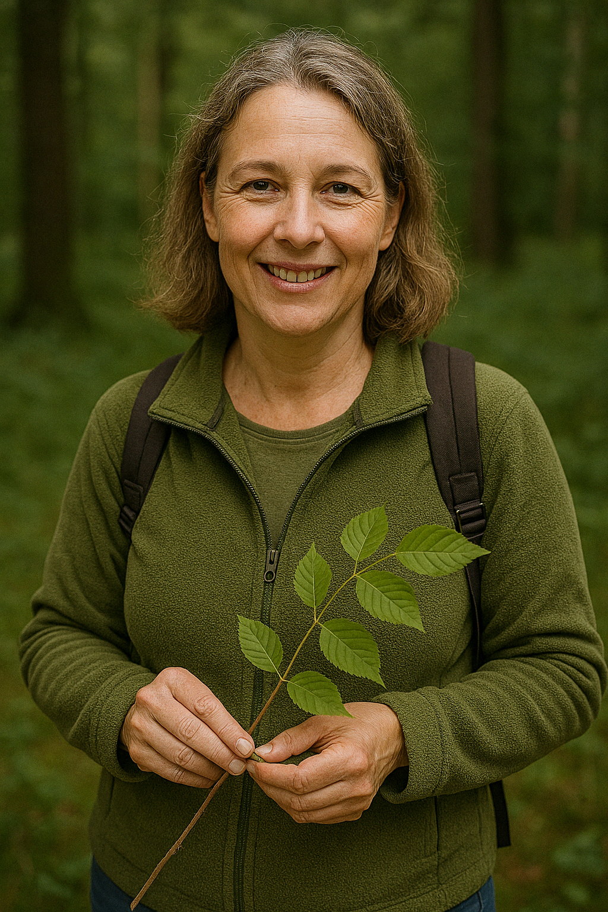
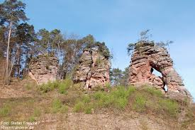
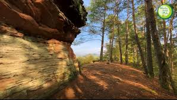
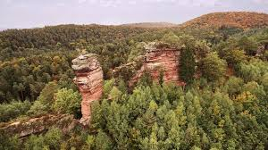
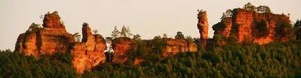
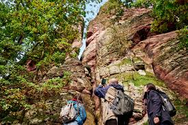
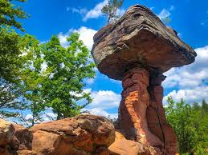

Geführt von: Julia R. – Naturpädagogin
Region: Dahn, Pfälzerwald
Schwierigkeit: Mittel
Dauer: ca. 3,5 Stunden
Gruppenanzahl: 15 Personen
Preis: 25€ Pro Person
Region: Dahn, Pfälzerwald
Schwierigkeit: Mittel
Dauer: ca. 3,5 Stunden
Gruppenanzahl: 15 Personen
Preis: 25€ Pro Person
Beschreibung
Diese Rundwanderung führt dich über Sandsteinfelsen und durch Wälder mit eindrucksvollen Panoramen.
Julia teilt ihr Wissen über Natur und Geologie, während du atemberaubende Ausblicke genießen kannst.

Was dich erwartet
- Kanzelwand & Teufelstisch
- Waldpfade mit Fernsicht
- Picknick mit Aussicht
- Kurze Natur-Inputs unterwegs
Mitbringen
Feste Schuhe, Sonnenhut, etwas Proviant und Trinkwasser.





